Servlet Technology Model
Agenda:
- Servlet API and life cycle
- Http methods
- GET
- POST
- HEAD
- OPTIONS
- PUT
- DELETE
- TRACE
- HttpServletRequest
- To retrive request parameters
- To retrive request headers
- To retrive request cookies
- HttpServletResponse
- To set response headers
- To set ContentType of response
- To get Text Stream for response
- To get Binary stream for response
- To perform redirecting
- To add Cookies to the response
Introduction :
2-tier:
known and fixed number of clients we can access 2-tier.
Web Application : collection of web resources.
web resource : each web resource is capable of generate one web page.(Ex: html , servlets, Jsp's , java script )
Web resources :2 types -
static
- Dynamic
A web page whose content is fixed i.e., static web page
Ex: html , js , images
A web page whose content will be changed dynamically based on time of request generate input values of the request.
Ex:Servlets, JSP's , Server side java script(ssjs) , PHP
Based on the place client side web resources program executed.(in browser)
Based on the place server side web resources program executed but not resides .(in server side)
WEB APPLICATION REQUIREMENTS :
- Browser software.
- Technology to develop client side.
- Technology to develop server side.
- User software.
- DataBase software.
WEB Server Software :
Web server software is special piece of s/w (or) special s/w which can manages the web applications and web resources we executes this web resources automatically or dynamically when ever your requesting .
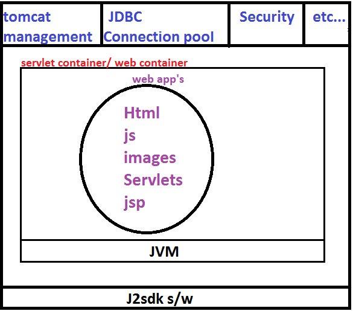
Responsibilities of web server :
- It collects all client http requests.
- It passes to appropriate web resources of web application.
- Web server proceed built middle ware software.
- container built in controller software.
- Gives resultant out put.
Responsibilities of Servlet Container :
- To provide the environment to manage web resource of Web Application.
- It Perform total life cycle operations.
- In case of JSP to generate corresponding Generated Servlet.
J2SDK software is instalable.
(through cmd prompt )
J2EE is not a instalable software , It is a specification,(not through cmd prompt )
Specification is a document , it contain set of RULES(interfaces) and GUIDELINES(classes).
SERVLET ia not a technology , It is a specification.
Specification related package consists of more number of INTERFACES and less number of CLASSES.
RULES --->interfaces(method declarations)
GUIDELINES----> classes(concrete methods )
In servlets we use the instance variables are not Thread Safe.
Web Programming for Static information :
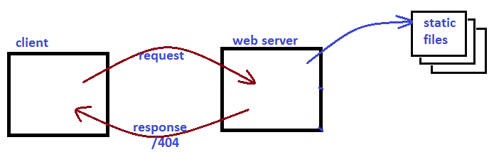
Client sends a request for a static file.
Web server searches whether the requested static file is available or not at Server side.
If the requested resource is available then it will return that static file as response.
If it is not available ,then web server sends 404 status code saying RequestResource is not available.
To serve static file, no processing is required at server side .Hence webserver always loves to serve static information.
Web Programming for Dynamic information :
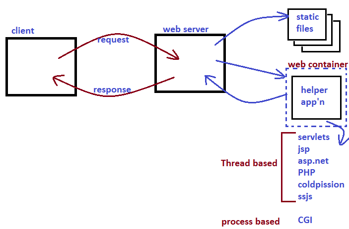
Client sends a request to the Web server.
Web server checks whether the request is for static or Dynamic information.
If the request is for static information , web server searches for the required Static file.
If it is available it returns that file , other wise it returns 404 status code.
If the request is for Dynamic information web server forwards the request to some Helper Application.
Helper Application analyzes and process the request and generate required dynamic information.
Helper Application forwards that response to the web server and web server forwards that response to the client.
The following are various possible Helper Applications at Server side.
1.Servlet
2.Jsp
3.Asp.net
4.PHP
5.cold fusion
6.CGI
7.server side Java Script.
A servlet is a Server side web component managed by web container for generation of dynamic information.
Web container is the best assistent to the programmer . It maintains entire life cycle of the servlet.
So that programmer has to concentrate only on Business logic.The remaining operations Instantiation of Servlet , Executing life cycle, Destroying the Servlet object and etc, taken care by Web container.
TYPES OF WEB CONTAINER:
There are 3 types of web containers are possible.
- Stand alone :
Both web server and web container are available in a single integrated component , such type of web container are called Stand-alone web container.
Ex : Tomcat
This type of web containers are best-suitable for small scale applications and rarely used.
- In-Process Web container :
If the web container runs in same address space(same machine) of web server and it is available as plug-in such type of web containers are called In-Process web container.
In this case both web server and web container need not be from the same vendor.
- Out-Process Web container:
Web server and web container both are running on different machines , Web container is attached to the web server externally.Such type of web containers are called Out-process web containers.
we can configure front-end apache has to forward the request to the back-end weglogic server. These type of web containers are industry using.
This type of web Containers are most commonly used web containers.
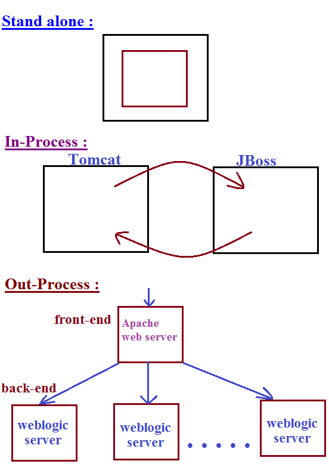
Differences between CGI and Servlets :
| CGI | SERVLETS |
| It is Process based i.e, for every request a separate process will be created and it is responsible to generate required response. |
It is thread-based i.e, for every request a new thread will be created and it is responsible to process the request. |
Creation and Destruction of process for every request is costly. If the number of requests increase it will effects performance of the system.Hence CGI technology fail to the destroy of scalable.
|
Creation and Destruction of new thread for every request is not costly . Hence there is no effect on performance even though number of requests increases due to this it succeeds to delevary scalable.
|
Two process never share same address space(memory).Hence there is no chance of concurrency, inconsistency problems and syncronization is not required.
|
All threads share common address space hence there may be a chance of concurrency, inconsistency problems.
|
CGI programs can be written in multiple languages.But most commonly used language is PERL.
|
Servlets can be written only in Java.
|
Most of the CGI languages are not object oriented.Hence we are missing benefits of OOPs.
|
Java language itself is Object-Oriented . Hence we can get all benefits of OOPs.
|
CGI technology is platform dependent.
|
Servlet technology is platform independent.
|
FAST CGI :
It improves performance when compared with traditional CGI. In this case web container maintains a pool of process so that a single process can serve multiple requests one by one.
Servlet Technology Model :
- servlet API and life cycle
- Http methods
- HttpServletRequest
- HttpServletResponse
Servlet deffination : Servlet is a single instance multiple thread based server side Technology to develop Dynamic web resources of web application.
Servlet API :
We can develop Servlets by using the following 2 packages.
- javax.servlet: This package defines several classes and interfaces to develop servlets from scratch irrespective of any protocol.
- javax.servlet.http : It is the sub package of javax.servlet and contains several convenient classes and interfaces to develop http based servlets.
javax.servlet Package :
Interfaces of javax.servlet Package :(14)
- Servlet :
Every servlet in java should implement servlet interface either directly or indirectly. ie, Servlet interface acts as a root interface for all java Servlets.
This interface defines the most common methods (including life cycle methods) which are applicable for any servlet object.
- ServletRequest :
ServletRequest object can be used to hold client data.
ServletRequest interface defines several methods to acts as end users provided data from the request object.
Ex: getParameter()
- ServletResponse :
ServletResponse object can be used to prepare and send responds to the client.
ServletResponse interface defines several methods which are required for preparation of response.
Ex: getWriter(), setContentType()
- ServletConfig :
For every servlet , web container creates one ServletConfig object to hold its configuration information like logical name of the Servlet , instantiation parameters etc.
ServletConfig interface defines several methods to access servlets configuration information.
Ex: getServletName()
getInitParameter()
- ServletContext :
For every web application, web container will create one ServletContext object to hold application level configuration information like name of the app'n and ServletContext parameter etc.
Note : ServletConfig is per Servlet , where as ServletContext is per web application.
- RequestDispatcher :
By using RequestDispatcher object we can dispatch the request from one component to another component.
This interface defines two methods.
1. forward()
2.include()
- SingleThreadModel :
Servlet technology is single instance multi threaded model. i.e, multi threads can operate simultaneously on the servlet object . Hence there may be a chance of data inconsistency problems.
we can resolve these problems by using SingleThreadModel interface. If a servlet implements SingleThreadModel interface, then a single thread can access servlet object at a time i.e, Servlet can process only one request at a time. i.e, the main objective of SingleThreadModel interface is to provide thread-safety.
But the problem with SingleThreadModel is Servlet can process only one request at a time which impacts performance of the system. Because of this problem SingleThreadModel interface is not recommended to use and it is deprecated in Servlet 1.3 version without introducing any replacement.
we can provide thread-safety to the Servlet by using syncronized keyword.
SingleThreadModel interface doesn't contain any methods . It is a marker interface.
Note: In addition to above interfaces javax.servlet package defines the following interfaces also .
- Filter
- FilterConfig
- FilterChain
----- to implements Filter Concept.
- ServletRequestListener
- ServletRequestAttributeListener
- ServletContextListener
- ServletContextAttributeListener
----- to implements Listener Concept.
Classes of javax.servlet package : (9)
- GenericServlet :
This class implement Servlet interface and provides dafault implementation for every method except service( ). Hence it is an abstract class.
we can use this class as a base class to develope protocol independent servlets.
- ServletOutputStream :
we can use this class object to send binary data( pdf files , image files , video/audio files etc ) as response to the client.
- ServletInputStream:
we can use ServletInputStream objects to read binary data send by the client.
Note:
In addition to above classes javax.servlet package defines the following classes also
- ServletRequestWrapper
- ServletResponseWrapper
-----------to implement wrapper concept.
- ServletRequestEvent
- ServletRequestAttributeEvent
- ServletContextEvent
- ServletContextAttributeEvent
-----------to define Events for Listeners.
All Events are classes and Listeners are interfaces
Exceptions of javax.servlet package :
javax.servlet package defines the following 2 exceptions.
-
ServletException.
Servlet can throw this exception whenever it faces any difficulty while processing client request.
- UnavailableException :
It is the child class of ServletException and it is depricated .
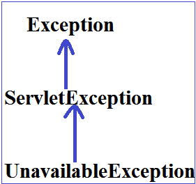
Note :
In total javax.servlet package defines
14 - Interfaces
9--Classes
2--Exceptions
javax.servlet.Servlet interface :
Every servlet in java should compulsary implement Servlet interface either directly or indirectly i.e, Servlet interface acts as a root interface for all servlets.
This interface defines the most common methods which can be applicable for any Servlet object.
The following are the methods defined in Servlet interface.
1. init( )
2. service( )
3. destroy( )
4. getServletConfig( )
5. getServletInfo( )
1. init():
| public void init(ServletConfig config ) throws ServletException |
This method will be executed only once by the web container immediately after Servlet instantiation to perform initialization activities .
Web container won't place Servlet object into service( ) method in the following cases :
1. If init() throws ServletException.
2. If init() doesn't return with in the time period specified by web container.
In the above cases web contaioner makes that servlet object eligible for Garbage Collection without calling any other life cycle method .
In this case web container creates a new Servlet object to provide service.
2. service( ) :
| public void service(ServletRequest request , ServletResponse response ) throws ServletException,IOExceptuion |
web container calls this method for every request to provide response.
Entire servicing logic/business logic , we have to define in this method only.
3. destroy() :
This method will be executed only once by the web container to perform claen up activities , when ever web container takes servlet object from out of service. This is usually happens at the time of application undeployed (or) at the time of server shut down (or) Web Container requires some free memory .
when ever web container calls destroy( ) method , it may not be executed immediately. It will wait untill completing all currently executing threads.
NOTE : init( ) , service( ) , destroy( ) are called life cycle methods of Servlet.
we can call destroy() explicitly from the init( ) and service( ) , in this case destroy( ) will be executed just like a normal method call and servlet object won't be destroyed .
4. getServletConfig :
| public ServletConfig getServletConfig( ); |
This method can be used to get ServletConfig object .
By using this config object Servlet can get its configuration information.
5. getServletInfo ( ) :
| public void getServletInfo() |
This method returns information about Servlet like Author, version , copy right information etc.
Demo program the develope a servlet by implementing Servlet interface
FirstServlet.java
package com.jobs4times;
import java.io.IOException;
import java.io.PrintWriter;
import javax.servlet.Servlet;
import javax.servlet.ServletConfig;
import javax.servlet.ServletException;
import javax.servlet.ServletRequest;
import javax.servlet.ServletResponse;
public class FirstServlet implements Servlet {
static {
System.out.println("Servlet class loading");
}
public FirstServlet () {
System.out.println("servlet instantiation");
}
ServletConfig config;
public void init(ServletConfig config ) throws ServletException {
this.config=config;
System.out.println(" we are in init( ) method ");
}
public void service(ServletRequest request, ServletResponse response)
throws ServletException, IOException {
System.out.println("We are in service( ) method ");
PrintWriter out=response.getWriter();
out.println("welcome to SCWCD");
}
public void destroy() {
System.out.println("We are in destroy() method ");
}
public ServletConfig getServletConfig( ) {
return null ;
}
public String getServletInfo() {
return "Written by Jobs4Times " ;
}
}
web.xml
<web-app>
<servlet>
<servlet-name>first</servlet-name>
<servlet-class>com.jobs4times.FirstServlet</servlet-class>
<load-on-startup>5</load-on-startup>
</servlet>
<servlet-mapping>
<servlet-name>first</servlet-name>
<url-pattern>/fs</url-pattern>
</servlet-mapping>
</web-app>
http://localhost:8080/SCWCD1A/fs
- When ever we are sending the request ,webserver checks whether this request is for static or dynamic information by using URL pattern.
- If the request is for static information , Webserver searches for the required static file and provides required response.
- If the request is for dynamic information , Webserver forwards that request to webcontainer .
The webcontainer identifies the corresponding servlet class by using web.xml
- Webcontainer loads that .class file , perform instantiation , and execute init( ) and service( ) methods and provide required response to the webserver
- webserver inturn forwards that response to end-user.
WithOut <load-on-startup> :
First Request:
- loading .class file (/ servlet loading)
- Instantiation
- init( )
- service( )
Second Request: service( )
With <load-on-startup> :
At server startup/Application deployment
- loading .class file (/ servlet loading)
- Instantiation
- init( )
First Request : service( )
Second Request : service( )
Note:The allowed values for <load-on-startup> tag is an integer i.e., +ve , zero , -ve
In the case of <load-on-startup> in deployment descriptor -
Highest value to give the least priority
-
Lowest value give high Priority
-
Zero will give last priority
- -ve value means ignore the <load-on-startup> concept.
If we give the two servlets having the same <load-on-startup> value we can't expect execution order or behaviour .
What is the advantage of <load-on-startup> :
We can equalize the response time of first request and remaining requests.
The main disadvantage of <load-on-startup> is it increases server start up time without any specific requirement don't configure this <load-on-startup> on servlet.
Note: From servlet 2.5v onwards a single servlet can be mapped with multiple <url-pattern>tags i.e., we can take multiple <url-pattern> tags with in single <servlet-mapping> tag.
Ex:
<servlet-mapping>
<url-pattern>/test </url-pattern>
<url-pattern>/test </url-pattern>
</servlet-mapping>
Note :
Whenever we are writing 2 servlets having same url-pattern , if we are sending a request to particular url-pattern
The order of evaluation of web.xml is decided by the underling webserver , there is no specification rules
- In the case of Tomcat the order of evaluation of web.xml is Bottom to Top.
- In the case of Weblogic the order of evaluation of web.xml is Top to Bottom.
Life Cycle of the Servlet that implements Servlet interface :
- Servlet class loading by class loader.(It is part of Jvm)
- Servlet Instantiation by webcontainer , For this web container always calls public-no-argument constructor . Hence Every servlet should compulsary contain public-no-argument constructor.Otherwise we will get RuntimeException saying java.lang.Instantiation exception .
- Execution of init(-) by webcontainer
Note: The above 3 steps will be performed Generally at the time of first request.If<load-on-startup> is configured these will be executed at the time of either server startup or at the time of application deployment.
- Execution of service( ) by web-container.
- Execution of destroy( )
Note:If we are invoking destroy( ) explicitly inside service( ) that time any exception will be raised the exception will show to the end-user, when we won't handle this situation .
If web-container calls destroy( ) then that time the exception will be raised the exception that surpressed by the web-container.
constructor Vs init( ) :
- In general , we can use constructor to perform initialization activities but in old versions of java,
constructor cannot accept dynamically generated class name as argument.
- To perform initialization of servlet compulsary we should provide ServletConfig object as argument.
whose class name is dynamically generated by web-container
- As constructor cannot accept these dynamically generated names, Sun people ignores constructor concept and introduced a specific method init( ) to perform initialization activities , which can take dynamically generated class names as the arguments.
- In the older versions , constructor cannot take any arguments but to perform initialization of a servlet compulsary we should provide ServletConfig as argument.
- Hence we can't use constructor to perform initialization activities , Sun people introduced a specific methods init( ) . for this , which can take ServletConfig as argument.
destroy( ) Vs finalise( ) :
- Before destroying any object Garbage collector always calls finalise( ) to perform cleanup activities. But we can't expect exact behaviour of Garbage collector. which is vendor dependent.
- Hence instead of depending on finalise( ) , Sun people introduced a specific method destroy( ) to perform cleanup activities , which should be executed always.
GenericServlet(AC):
- We can develope servlet by implementing Servlet interface directly.
In this apprach compulsary we should provide implementing for all methods of servlet interface whether it is required or not .
This approach increase length of the code and reduces readability. We can resolve this problem by using GenericServlet.
- GenericServlet implements Servlet interface and provide default implementation for every method except service( ).
Hence it is an abstract class.
- We can develope servlets very easily by extending GenericServlet, instead of implementing Servlet interface directly.
In this appraoch we have to provide implementation only for required methods instead of implementing all.
It reduces length of the code and improves readability.
- GenericServlet is protocol independent servlet.
- GenericServlet implements ServletConfig and Serializable interfaces also.
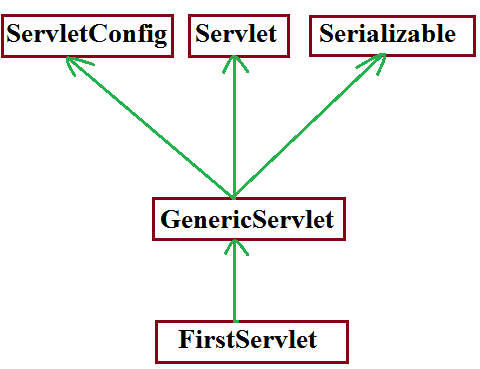
Demo program to develope Servlet by extending GenericServlet :
public class FirstServlet extends GenericServlet {
public void service(ServletRequest request,ServletResponse response)
throws ServletException, IOException {
PrintWriter pw=response.getWriter();
pw.println("Developing Servlet by GenericServlet");
System.out.println("This is Service() in First Servlet ");
}
}
Internal implementation of GenericServlet :
public abstract class GenericServlet implements
Servlet , ServletConfig , Serializable {
private transient ServletConfig config ;
public void init(ServletConfig config) throws ServletException {
this.config=config ; //webcontainer purpose
init( );
}
public void init( ) throws ServletException { //programmer purpose
}
public abstract service(ServletRequest request,ServletResponse response)
throws ServletException, IOException ;
public void destroy() {
}
public ServletConfig getServletConfig( ) {
return config;
}
public String getServletInfo( ) {
return "this is GenericServlet" ;
}
----- ------ ---- ------
-------- ------ ------
}
GenericServlet contains 2 init( ) , we can override init( ) in our Servlet as follows .
1st way :
public void init(ServletConfig config ) throws ServletException {
// my own initialization
}
This approach is not recommented , because we are not saving config object for the future purpose . Hence in our servlet any one calls getServletConfig( ), this method returns null . If we are calling getServletName() then we will get Runtime Exception saying java.lang.NullPointerExceprion
2 nd way :
public void init(ServletConfig config ) throws ServletException {
super.init(config);
............................
}
This approach is valid , but not recommended to override in Servlet , because internally 3 init( ) are executed , which impacts performence of the system .
3rd way :
public void init( ) throws ServletException {
// my own initialization activities
}
This way is highly recommented to define init( ) in our servlet.
How many init( ) present in GenericServlet and explain the need of it ?
2 init( ) methods are available in GenericServlet.
One is for web-containers purpose and the Second one is programmers purpose.
In how many ways we can override init( ) in our Servlet and which is the best way ?
3 ways 3rd one is the best way.
In GenericServlet why config variable declared as transient ?
- Every Servlet in java is Serializable.
At the time of Serialization of servlet object the corresponding config object is serialized automatically .
Because it is part of object-graph of Servlet object.
- If we are serializing config object , from that config object hacker may get corresponding context object reference. Once hacker got context object he can able to perform any operation on our application , which is never be recommended security wise. Hence at the time of serialization of servlet object , we can't Serialize config object. Due to this reason config variable declared as transient.
2.javax.servlet.http package :
This package defines more convenient classes and interfaces to define http based Servlets .
//protocol dependent
Interfaces of javax.servlet.http : (8)
- HttpServletRequest :
It is the child interface of ServletRequest .
HttpServletRequest object can be used to hold client information.
- HttpServletResponse :
It is the child interface of ServletResponse.
This object can be used to prepare and send response to the client.
- HttpSession :
We can use HttpSession object to remember the client information across multiple requests. i.e., we can use session object for session management purpose.
- HttpSessionListener :
To implement http based Listener
- HttpSessionAttributeListener :
To implement http based Listener
- HttpSessionBindingListener :
To implement http based Listener
- HttpSessionActivationListener :
To implement http based Listener
- HttpSessionContext :
deprecated and hence not recommended to use
Classes of javax.servlet.http package : (7)
- HttpServlet :
It is the child class of GenericServlet . It can be used for developing http based Servlets .
- Cookie :
We can use Cookie objects to implement Session management.
- HttpSessionEvent :
To define Events for http based Listeners.
- HttpSessionBindingEvent :
To define Events for http based Listeners.
- HttpServletRequestWrapper :
To define http based Wrappers.
- HttpServletResponseWrapper :
To define http based Wrappers.
- HttpUtils :
Deprecated , not recommended to use .
Note:
In total javax.servlet.http package defines
8 ------->interfaces
7------->classes
Webserver and webclient communicate by using some common language ,which is nothing but HTTP .
Http defines a standard structures for HttpRequst and HttpResponse .
Structure of HttpRequest :
Browser always sends the request in the following format :
| Request Line |
| Request Headers |
| Request Body |
Request Line :
GET
(Request method) | /login.jsp
(Request URI) | HTTP/1.0
(protocol version used by browser) |
Request Headers :
The request headers describes configuration information of the browser like -
media types accepted by browser , language accepted by browser , encoding types supported by browser etc.
-
Web server use this information to send custimized responses to the client .
Request Body :
- It contains end-user provides information for the GET request it is optional where as for the POST request it is mandatory.
- This is the structure of HttpRequest , If the browser sends request in this format , then only webserver understands the request . i.e, webserver understandable form.
Structure of HttpResponse :
| Status Line |
| Response Headers |
| Response Body |
Status Line :
200
(Status code) | OK
(Description) | HTTP/1.1
(protocol version used by server) |
Status Codes :
1xx --------> Informational
2xx--------->Successful
3xx--------->Redirectionaal
4xx--------->client error
5xx--------->Server error
Response Headers :
These will provide configuration information of the server and information about the response [meta data] like content type of response , content length , last modified data etc.,
Browser will use these response headers to represent properly the response to the end-user.
Response Body :
It contains the original response provided by webserver.
If the server sends the response in the above form , then only browser understands the response
i.e., it is browser understandable form.
Types of HttpRequest methods :
Based on type of information requested by the browser HttpRequest methods are divided as follows
- GET
- POST
- HEAD
- OPTIONS
- PUT
- DELETE
- TRACE
- CONNECT
- MOVE
- LOCK
- PROFIND
1 - 3 methods introduced in http 1.0
4 - 11 methods introduced in http 1.1
1 - 7 are Big Http methods
GET :
- We can use get request if we are expecting information from the server .
- Usually for the get request read operation will be performed at server side . Hence status of application won't be changed in get request.
- In GET request end-users provided information will be appended to the url as the part of Query string.
- As the end-users information is visible in url. there may be a chance of security problems will raise. Hence sensitive data we can't send by using get request.
- The length of the url is fixed . Hence we can send only limited amount of information by get request .
- Only character data is allowed in url . Hence we can't send binary data by using get request.
- As extra client provided information is available in the url , Bookmarking of url is possible .
Idempotent request :
By repeating the request multiple times , if there is no change in response such type of requests are Idempotent requests.
Ex: GET requests are Idempotent and POST requests are not Idempotent.
Safe request :
By repeating the same request multiple times , if there is no side-effect at server side ,
such type of requests are called safe-requests .
Ex: GET requests are safe , where as POST requests are not safe to repeat.
Triggers to send GET request :
- Type url in the address bar and submit is always GET request.
- Clicking hyperlink is always GET request.
- Submitting the form , where method attribute specify with GET value is always GET request.
<form action="/test" method="GET">
----------- ----
</form>
- Submitting the form without method attribute is always GET request i.e., default method for form is GET.
<form action="/test">
----------
---------
</form>
POST :
- If we want to post huge amount of information to the server then we should go for POST.
Ex: uploading our resume in job portal.
- Usually in post requests update operation will be performed. The state of operation will be changed.
- In post request , client information will be encapsulated in the request body instead of appending to the url . Hence we can send sensitive data by using POST request.
- There is no limit on size of request body . Hence we can send huge amount of information to the Server.
- We can send binary data also in addition to text data.
- Bookmarking of POST request is not possible.
- POST requests are not Idempotent and not-safe to repeat.
Triggers to send POST request :
There is only one-way to send POST request that is to use the form with method attribute value is POST .
<form action="/test" method="POST">
----------
---------
</form>
I.e., without having the form there is no chance of sending POST request.
Differences between GET & POST :
| GET | POST |
|---|
| If we are expecting information from server , then we should go for GET . |
If we want to post huge information to server , then we should go for POST . |
| Usually read operation will be performed. |
Write & update operators will be performed . |
| Client data will be appended to url in the form of Query-String . |
Client data will be encapsulated in request body . |
| We can't send sensitive information . |
We can send sensitive information . |
| We can send only limited information. |
We can send Huge information. |
| We can send only text data. |
We can send text & binary data. |
| Bookmarking is possible . |
Bookmarking is not- possible . |
| GET requests are Idempotent & Safe. |
POST requests are not-Idempotent & not-Safe. |
| Multiple ways to send GET request. |
Only one way to send POST request. |
HEAD :
- We can use this method to get only response header information like content type , content length , last modified date etc., but no response body i.e., head request retrives always respone header but not response body.
- For HEAD request , internally doGet( ) will be executed. HEAD request is part of GET request.
- HEAD requests are Idempotent & Safe.
HEAD request -----> doHead {
doGet {
take only header part of GET response and
provide that as response to HEAD request.
}
}
OPTIONS :
- This method is for getting supporting http methods to retrive a perticular resource from the Server side .
- OPTIONS method is Idempotent and Safe.
- Note: HEAD response is the part of GET response and OPTIONS is the part of HEAD response .
response from OPTIONS method request :
Http 1.1 | 200 | OK
Host : www.jobs4times.com
Server : Apache
Date : Fri, o8 Nov
Allow : OPTIONS , HEAD , GET , POST
Content length : 0
PUT :
- We can use PUT method for placing a resource at Server side where the location is specified by URL.
- At the specified location , if already another resource present then the old resource is replaced with provided new resource .
- By means of status code we can identify whether replacement is happend or not .
- 200 means replacement happen , 201 means replacement not happen.
- PUT method is Idempotent but not Safe .
DELETE :
- We can use this method for deleting a perticular resource from Server side. It is exactly counter part of PUT method.
- DELETE is Idempotent , but not-Safe.
Note: As the PUT & DELETE methods are not safe. Most of the web-servers won't allow these methods by default.
To allow these methods at server side some configuration changes are required.
TRACE :
We can use this method for debugging purposes. If we want to know what request , server getting exactly as response, then we should go for TRACE method.
TRACE method is Idempotent and Safe.
| Method |
Is Idempotent ? |
Is Safe ? |
| GET |
Yes |
Yes |
| POST |
No |
No |
| HEAD |
YES |
YES |
| OPTIONS |
Yes |
Yes |
| PUT |
Yes |
No |
| DELETE |
Yes |
No |
| TRACE |
Yes |
Yes |
Note :
The only non-idempotent method is POST .
The following methods are not safe : POST , PUT , DELETE .
HttpServlet :
We can use HttpServlet class as a base class to develop Http based Servlets.
It is the child class of GenericServlet.
For every Http method XXX , HttpServlet class contains the corresponding doXxx() methods.
| protected void doXxx() throws ServletException, IOException |
|---|
Ex: protected void doGet(HttpServletRequest request , HttpServletResponse response ) throws ServletException, IOException
doGet( ), doPost( ), doHead( ), doOption( ), doPut( ), doDelete( ),doTrace( ) .
HttpServlet contains 2 service( ) methods.
- public void service(ServletRequest request , ServletResponse response ) throws ServletException, IOException
- protected void service(HttpServletRequest request , HttpServletResponse response ) throws ServletException, IOException
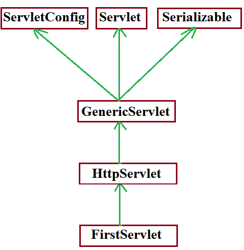
Ex: Demo program for HttpServlet.
login.htmlWe can use this to send post request to the server
<html>
<body><h1>This is HttpServlet Demo</h1>
<form action="/scwcd1c/test" method="post">
Enter Name : <input type="text" name="uname" >
<input type="submit">
</form>
</body>
</html>
FirstServlet.java
import javax.servlet.*;
import javax.servlet.http.*;
import java.io.*;
public class FirstServlet extends HttpServlet {
public void doGet(HttpServletRequest request, HttpServletResponse response)
throws ServletException, IOException {
PrintWriter out=response.getWriter();
String name=req.getParameter("uname");
out.println("Hello"+name+"Good Morning , This is doGet method");
}
public void doPost(HttpServletRequest request, HttpServletResponse response)
throws ServletException, IOException {
PrintWriter out=response.getWriter();
String name=req.getParameter("uname");
out.println("Hello"+name+"Good Morning , This is doPost method");
}
}
web.xml
<web-app>
<servlet>
<servlet-name>first</servlet-name>
<servlet-class>FirstServlet</servlet-class>
</servlet>
<servlet-mapping>
<servlet-name>first</servlet-name>
<url-pattern>/fs</url-pattern>
</servlet-mapping>
</web-app>
Deployment Structure :
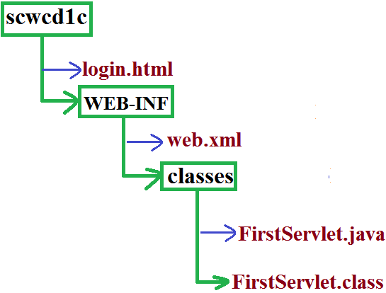
Life Cycle of HttpRequst :
- When ever we are submitting the form , browser prepares HttpRequest and send to the Server.
- Webserver checks whether the request is for static or for dynamic information, by using URL.
- If the request is for static information , webserver provide required response.
- If the request is for dynamic information , then webserver forwards that request to web-container.
- Webcontainer identifies the corresponding matched servlet by using web.xml
- Webcontainer checks whether the corresponding Servler object is already available or not . If it is not already available , then webcontainer loads the corresponding .class file and perform instantiation by executing public no argument constructor .
- After instantiation , immediately webcontainer creates the ServletConfig object and invoke init( ) by passing that config object as argument.
- Webcontainer creates ServletRequest and ServlerResponse object and by passing those as arguments , It will invoke public service( ).
- With in that service( ) , request and response objects will be type casted into HttpServletRequest and HttpServletResponse and invoke protected service( ) by passing those as arguments.
public void service(ServletRequest req , ServletResponse res )
throws ServletException, IOException {
HttpServletRequest req=(HttpServletRequest)req ;
HttpServletResponse res=(HttpServletResponse)res ;
service(req1 , res1);
}
- With in the protected service( ) we will identify HttpRequest method and corresponding doXxx( ) will be invoked. If it is not a valid Http method then it is method will return 501 status code response saying invalid Http method .
protected void service(HttpServletRequest request,HttpServletResponse response)
throws ServletException, IOException{
String method=request.getMethod( ) ;
if(method.equals("GET")) {
doGet(req , res) ;
}
else if(method.equals("POST")) {
doPost(req , res) ;
}
else if(method.equals("HEAD")) {
doHead(req , res) ;
}
..........................
.........................
else {
prepare response with 501 Status code saying Invalid Http Method.
}
}
- If our Servlet class contain required doXxx( ) , then it will be executed . Otherwise parent class doXxx( ) will be executed.
NOTE :
- For every web application, web container creates one ServletContext object at the time of application deployment.
- For every Servlet , web container creates one ServletConfig object just before calling init( ).
- For every request web container creates one ServletRequest and one ServletResponse objects just before calling service( ) . Once service( ) completes both request and response objects will be eligible for Garbage Collector(GC).
- Case 1 : If we are writting public service( ) in our Servlet , then for any type of request [GET or POST] only service( ) will be executed.
- Case 2 : If our Servlet contains both public service( ) and protected service( ) , then for every request only public service( ) will be executed.
- Case 3 : If our Servlet contains both service( ) and doGet( ) , then for any request including GET , only service( ) will be executed. And there is no chance of executing doGet( ).
Note: It is never recommended to place service( ) in our Servlet. i.e., defining service( ) in our Servlet is stupid kind of activity.
- Case 4 : If we are sending get request , but our Servlet doesn't contain doGet( ) , then HttpServlet doGet( ) will be executed which provides response with 405 status code saying Http method GET is not Supported by this url.
- Case 5 : If we are sending post request , but our servlet doesn't contain doPost( ) , then HttpServlet doPost( ) will be executed , which provide 405 status code saying Http method POST is not Supported by this url.
- Case 6 : HttpServlet class doesn't contain any abstract method , still it is declared as abstract class what is the reason ?
For majority methods in HttpServlet , proper implementation is not available and these are just to send error information .
Hence if we are creating HttpServlet object directly and calling these methods , we will get just error information , with that we can't do anything.
To prevent instantiation of HttpServlet , Sun people declared HttpServlet class as abstract .
- Case 7 : To provide same response for both GET and POST request , we have to implement doGet( ) and doPost( ) as follows .
Ex:
public class FirstServlet extends HttpServlet {
public void doGet(HttpServletRequest request,HttpServletResponse response)
throws ServletException, IOException {
// implemented required information
}
public void doPost(HttpServletRequest request,HttpServletResponse response)
throws ServletException, IOException {
doGet( ) ;
}
}
- Case 8 : In our Servlet , It is not recommended to override the following methods . Because these methods are properly implemented inside HttpServlet.
- service(ServletRequest request, ServletResponse response)
- service(HttpServletRequest request, HttpServletResponse response)
- doHead( )
- doOptions( )
- doTrace( )
- Case 9 : In our Servlet , it is highly recommended to override the following methods , because these methods doesn't have proper implementation in HttpServlet.
- doGet( )
- doPost( )
- doPut( )
- doDelete( )
- Case 10 : To provide response to HEAD request , we have to override either doHead( ) or doGet( ) , otherwise we will get 405 status code saying Http method GET is not supported by this url.
HttpServletRequest :(I)
Using HttpServletRequest , write code to
- Retrieve Form parameters
- getParameter( )
- getParameterValues( )
- getParameterNames( )
- getParameterMap( )
- Retrieve request Headers
- getHeader( )
- getHeaders( )
- getHeaderNames( )
- getIntHeader( )
- getDateHeader( )
- Retrive Cookies
- getCookies( )
Retrieve Form parameters :
- Form parameters are key-value pairs , where both key and values are String objects only.
- A parameter can be associated with either a single value or with multiple values.
- ServletRequest interface defines the following methods to retrieve Form parameters at server side .
- getParameter( )
- getParameterValues( )
- getParameterNames( )
- getParameterMap( )
- getParameter( ) :
| public String getParameter(String pname ) |
- getParameterValues( )
| public String[ ] getParameterValues(String pname ) |
- getParameterNames( )
| public Enumeration getParameterNames( ) |
- getParameterMap( )
| public Map getParameterMap( ) |
- Returns the map object containing parameter names as keys and parameter values as map values.
- Keys are strings and values are string[ ] .
- If the request doesn't associated with any parameters , this method returns empty map object , but not null.
| key(String) | value(String[ ]) |
|---|
| subject | {SCJP , SCWCD } |
| user | { arun } |
| .......... | ........... |
| ---------- | --------- |
Ex:
Map m = request.getParameterMap( ) ;
for(Object o : m) {
Map.Entry m1=(Map.Entry) o;
String pname=(String)m1.getKey( );
String[ ] pvalue=(String[])m1.getValue() ;
out.print(pname+"......." );
for( String s1 : pvalue ) {
out.println(s1 + " , ");
}
out.println(" ");
}
output :
subject .....SCJP , SCWCD
user.......arun
Example :
Map m=req.getParameterMap();
Set keySet=m.entrySet();
Iterator itr=keySet.iterator();
while(itr.hasNext()) {
Map.Entry entry=(Map.Entry)itr.next();
String pname=(String)entry.getKey();
out.println(pname);
String[] pvalues=(String[])entry.getValue();
out.println(pvalues);
Example :
public void doPost(..).. {
response.setContentType();
PrintWriter pw=res.getWriter();
out.println("");
out.println("name :"+ request.getparameter("uname"));
............
............
}
- For every request browser sends its configuration information in the form of request headers. These may include the media types accepted by browser , encoding types supported by browser the type of browser etc.
- Server uses these request headers to send customized responses to the client.
The following are some of the important request headers.
- Accept :
media types accepted by browser.[ like txt/html , pdf , ppt , jar ]
- Accept-Encoding:
Encoding types supported by browser.
- User-agent:
It represents the type of the browser.
- Content-length:
It represents the length of request body.
- Cookie :
Used to send cookies for Session managament.
Utilities of Request headers :
- By using Accept-Encoding request header at Server side we can identity whether browser supports compression from or not.
- If browser supports compressed form , we can send response in compressed form. So that we can save download time and bandwidth.
- By using User-agent request header at server side we can identify the type of browser which sends the request. Based on that we can send browser compatable customized responses.
- By using Cookie request header we can send Cookie to the server so that we can achieve session management.
HttpServletRequest defines the following methods to retrieving header information at server side
- getHeader( )
| public String getHeader(String hname) |
- getHeaders( )
| public Enumeration getHeaders(String hname) |
- Returns all values associated with specified header .
- If the specified header not available , then this method returns empty Enumeration object, but not null.
- Argument is not-case sensitive .
- getHeaderNames( )
| public Enumeration getHeaderNames( ) |
Returns all request header names associated with that request object.
HttpServletRequest defines the following more convinient methods to retrive int and date values(Headers) directly .
- getIntHeader( )
| public int getIntHeader(String hname); |
Ex:
String length=request.getIntHeader("content-length");
int l=Integer.parseInt(length);
(OR)
int l=request.getIntHeader("content-length");
If the specified request header is not associated with int value , then this method returns NumberFormatException.
req.getIntHeader("user-agent");//RE:java.lang.NumberFormatException
If the specified request header is not available in getIntHeader() , this method returns "-1" but not null.
- getDateHeader( )
| public long getDateHeader(String hname); |
Write a Servlet to print all request-headers associated with the request.
EX:
public class ReqHeader extends HttpServlet {
public void doGet(HttpServletRequest request,HttpServletResponse response)
throws ServletException, IOException {
PrintWriter out = response.getWriter( ) ;
Enumeration e = request.getHeaderNames( ) ;
while(e.hasMoreElements( ) ) {
String hname=(String)e.nextElement( );
String hvalue=request.getHeader(hname);
out.println(hname+"------"+hvalue);
}
}
}
Retriving Cookies from the request :
- HttpServletRequest interface defines the following methods to retrive cookies from the request object .
Cookie[] c = request.getCookiees( ) ;
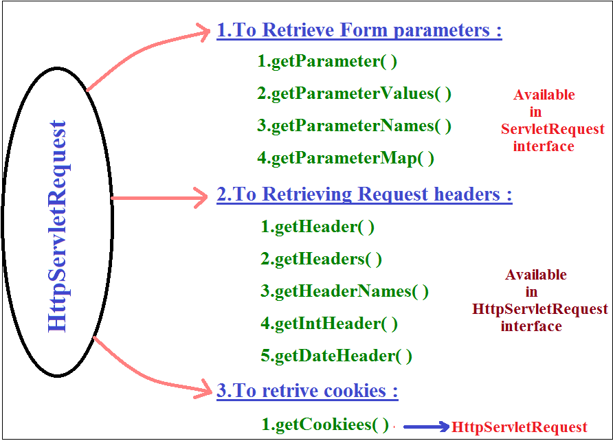
Retrieving client & Server information from the request :
ServletRequest interface defines the following methods to retrieve client and server information from request.
| public String getRemoteHost( ) | Returns fully qualified name of the client which sends the request. | public String getRemoteAddr( ) | Returns IP-address of the client . | public String getRemotePort( ) | Returns the port no. on which the client is running . | public String getServerName( ) | Returns the name of the Server to which the request has been sent . | public String getServerPort( ) | Returns the port no. on which server is running .
A request triggered from www.jobs4times.com with an IP-address 192.168.203.32 running on port 1012. Place the appropriate ServletRequest methods to their corresponding values.
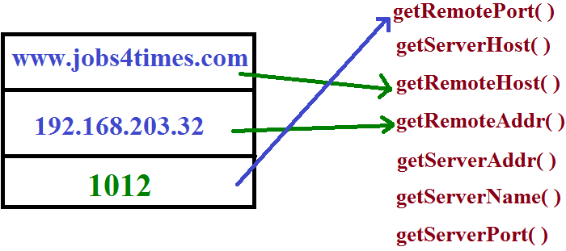
HttpServletResponse :
By using HttpServletResponse interface , write code
- To set Response Headers .
- To set content type of Response .
- To acquire text stream for response.
- To acquire binary stream for response .
- To redirect the request to another URL .
- To add cookies to response.
- Http response header describes the configuration information of the server and information about the response like content-type , content-length , last modified data etc.,
- Browser using these response headers to display response body properly to the end user.
HttpServletResponse defines the following methods to add headers to the response .
-
| public void addHeader(String hname , String hvalue ) |
- If the specified header name is already available , to the existing values , this new value will also be added.
- Replacement will not Occur .
| public void setHeader(String hname , String hvalue ) |
- If the specified header is already available . Then the old value will be replaced with new value .
Some times headers associated with int & date values .
- public void addIntHeader(String hname , int hvalue )
- public void setIntHeader(String hname , int value )
- public void addDateHeader(String hname , long ms )
- public void setDateHeader(String hname , long ms )
Note:
If the header associated with multiple values . Then we have to use addHeader( )
If the header associated with only one value , then we should go for setHeader( )
Set Content type of Response :
Content type header represents MIME type (multipurpose internet mail extension) of the response.
Common MIME Types :
- text/html --------> Html text as response
- text/xml --------> xml document as response
- image/jpeg --------> JPEG as response
- image/png --------> png as response
- application/ms-excel --------> excel sheet as response
- application/ms-word --------> word document as response
- application/pdf --------> PDF file as response
- application/jar --------> jar file as response
We can set MIME type by using the following 2 ways
- By ServletResponse interface :
It contains the following method to set the response. | public void setContentType(String mimeType) | Ex:response.setContentType("application/PDF")
- By HttpServletResponse interface :
It contains setHeader( ) to set content type. | public void setHeader(String hname , String hvalue) |
Ex:response.setHeader("content type" , "text/html"); Note: In general response.setContentType( ) is recommended to use.
To acquire text stream for the response :
- We can send text data as the response by using PrintWriter object .
- We can get PrintWriter object by using getWriter( ) of ServletResponse .
| public PrintWriter getWriter( ) throws IOException |
Ex: PrintWriter out = response.getWriter( ) ;
To acquire Binary stream as response :
- We can send Binary information(video , image files) by using ServletOutputStream object.
- By using getOutputStream( ) of ServletResponse we can get this object .
| public ServletOutputStream getOutputStream( ) throws IOException |
Ex: ServletOutputStream sos=response.getOutputStream ( ) ;
Demo program to send image file as response to the client
import javax.servlet.*;
import javax.servlet.http.*;
public class BinaryStream extends HttpServlet {
public void doGet(HttpServletRequest request,HttpServletResponse response)
throws ServletException,IOException{
response.getContentType("image/jpeg");
ServletOutputStream sos = response.getOutputStream( ) ;
//File f= new File("c:\\tomcat\sunset.jpeg");
String path=getServletContext( ).getRealPath("sunset.jpeg");
File f= new File(path);
FileInputStream fis=new FileInputStream(f);
byte[] b=new byte[(int)f.length()];
//f.length() returns long so we have to convert into int.
//[] --> accepts int only
fis.read(b); //reading the image & place into byte[]
sos.write(b); //write byte[] to response
sos.flush( );
sos.close( );
}
}
To send XML data as a response :
response.setHeader("content-Type","text/xml");
PrintWriter out=response.getWriter();
out.print("<?xml version=\"1.0\"?>");
out.print("<greeting language=\"en_US\">");
out.print("hello world");
out.print("</greeting>");
Note :
At any point of time we can get either PrintWriter object (or) ServletOutputSteram object but not both , simultaneously.
Otherwise we will get RuntimeException saying IllegalStateException
Because from the Servlet we can send only one response at a time.
public void doGet( ) {
PrintWriter out=response.getWriter( );
ServletOutputStream sos =response.getOutputStream( ) ;
-----------
-----------
}
Output: RuntimeException saying IllegalStateException getWriter( ) has already been called for this response.
IIQ:By using which of the following stream we can send both binary & text data as response from the Servlet ?
- PrintWriter(
 ) ) - ServletOutputStream (
 ) ) - ServletInputStream ()
- None of the above ()
Re-directing HttpRequest to another url :
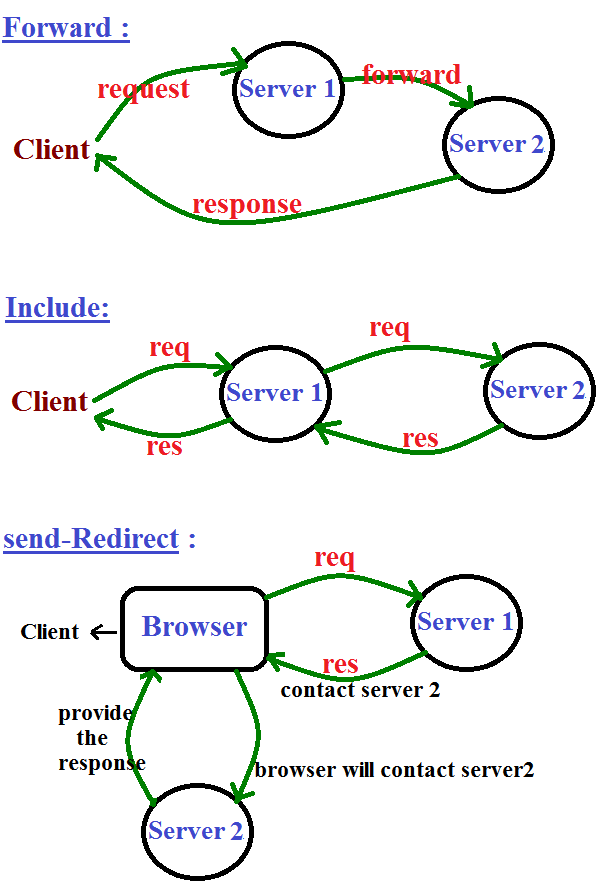
Forward & include should work when both servlets should be in same server .
Some times we have to re-direct the request to another url we can achieve this by using sendRedirect( ) of HttpServletResponse .
| public void sendRedirect(String targetpath) throws IOException |
Process of send Redirection :
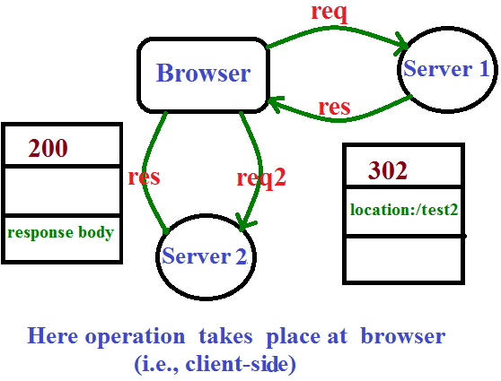
- Browser sends request to Servlet1
- If servlet1 is not responsible to provide response , then it will update browser to contact servlet2. This can be informed by setting status code 302 & location header with servlet2.
- Browser by seeing status code 302 creates a new request object & sends to Servlet2.
- Servlet2 provides desired response to the browser & the browser inturn display that response to the end user .
Demo program for send Re-direct :
public class FirstServlet extends HttpServlet {
public void doGet(HttpServletRequest request,HttpServletResponse response)
throws ServletException, IOException {
response.sendRedirect("test2");
(or)
response.setStatus("302");
response.setHeader("location" , "scwcd/test2");
}
}
public class SecondServlet extends HttpServlet {
public void doGet(HttpServletRequest request,HttpServletResponse response)
throws ServletException, IOException {
PrintWriter out=response.getWriter( );
out.println("2nd Servlet ");
}
}
- When ever we are sending request to FirstServlet , SecondServlet will provide the response through re-direction
- After committing the response we are not allow to perform re-direction. Otherwise we will get RuntimeException saying IllegalStateException(Tomcat people doesn't provide support for this).
public void doGet(HttpServletRequest request,HttpServletResponse response)
throws ServletException, IOException{
-----------------
---------------------
out.flush(); //committing the response
response.sendRedirect("/test2"); //RE:IllegalStateException
}
Applicable for forward also.
Differences between send-Redirection and forward mechanism :
| send Re-direct | forward |
|---|
| 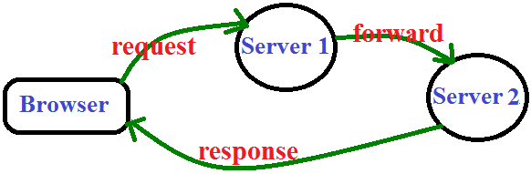 |
| This mechanism will work at client side. Hence client aware of which Servlet is providing the required response. |
This mechanism will work at server side and it is not visible to the client. Hence client is not aware of which Servlet is providing the required response. |
| In this approach an extra trip is required to the client side . Hence network traffic increases & effects the performence of the system. |
No extra trip is required to the client & hence there are no network traffic & performance problem. |
| This is only possible mechanism to communicate with resoueces which are present outside of web-container. |
forward mechanism will work with in the web-container only and we can't use this mechanism to communicate with the resources present outside of container. |
| Seperate new request object will be created in send Redirection . |
Same request object will be forwarded . |
By using HttpServletResponse object . we can achieve send redirection.
response.sendRedirect("/test2"); |
By using Request Dispatcher object we can achieve forward mechanism .
rd.forward(req , res); |
| After commiting the Response we are not allow to perform send Redirection .Otherwise we will get RuntimeException saying IllegalStateException. |
After Commiting Response , we can't perform forward otherwise IllegalStateException. |
Adding Cookies to the response :
HttpServletResponse contains the following method to addCookie to the Response object.
| public void addCookie(Cookie c ) |
Ex:
Cookie c=new Cookie(String name , String value) ;
response.addCookie(c);
NOTE :
- We can use redirection to communicate either with in the same server or outside the server. But recommended to use communicate outside.
- forward mechanism is applicable to communicate only with in the same server . But outside of server we can't use.
- To communicate with in the same server we can use either forward or send redirection but recommended to use forward.
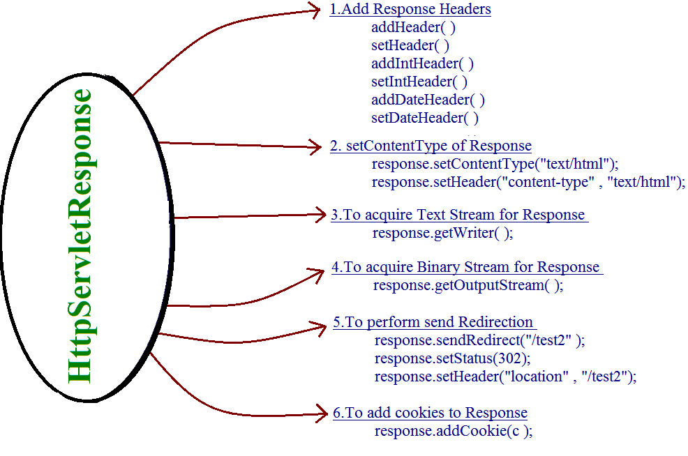
|